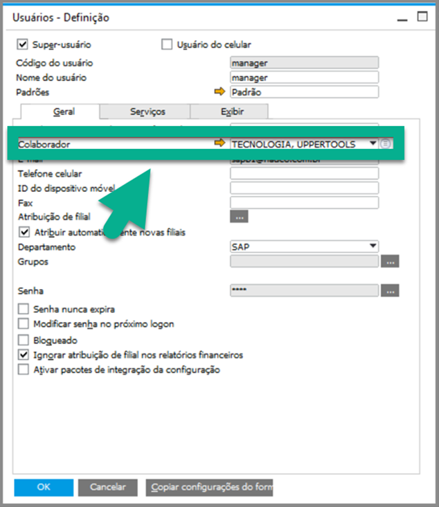
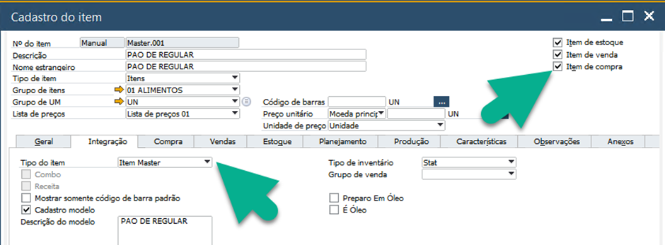
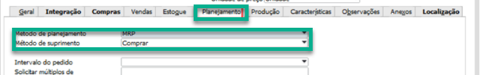
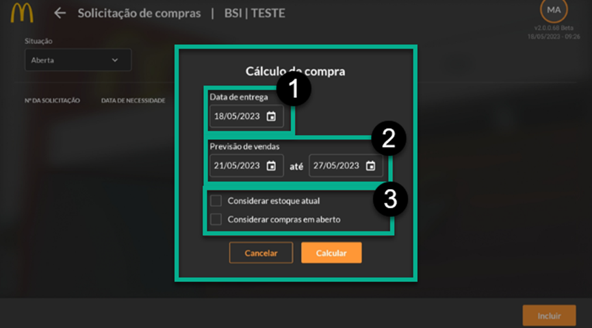
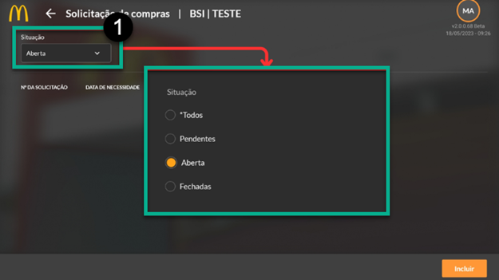
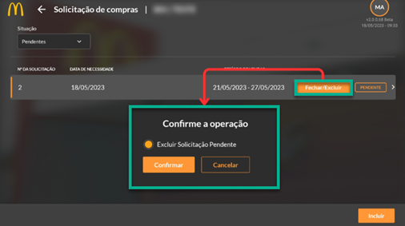
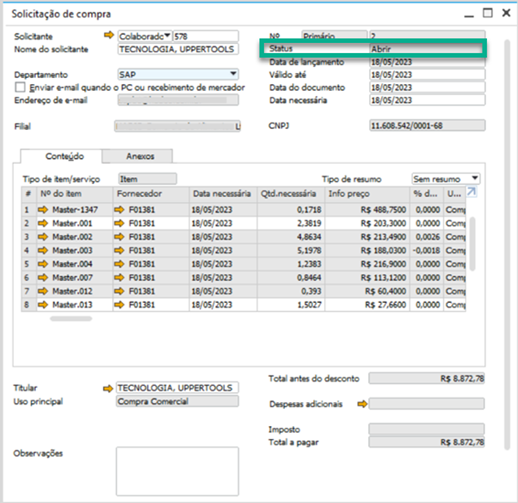

Solicitação de Compras
A Solicitação de Compras é dependente de duas outras funcionalidades dentro do aplicativo, o cálculo de MGC de Master e o cálculo de Previsão de Vendas. Além disso, é necessário configurar, dentro do SAP, o usuário (tela “Usuário – Definição) e os itens (tela “Cadastro do Item”) que estarão incluídos na solicitação de compras para o correto funcionamento.
Uma Solicitação de Compras só poderá ser gerada por um usuário cadastrado com colaborador vinculado.
Somente aparecerão os itens na solicitação de compras que forem do tipo “Master”, estiverem com seu cadastro ativo, marcados como item de compra, configurado como Método de planejamento “MRP” e método de suprimento “Comprar”.
 Antes de abrir uma solicitação de compras, é necessário abrir um cálculo de MGC de Master (última opção do menu de compras) e realizar o cálculo de previsão de vendas (dentro do módulo de previsões).
Deverá entrar no módulo de Compras e escolher a função no menu lateral de MGC de Masters, após isso abrirá uma tela com o cálculo do MGC gerado previamente (caso já tenha sido gerado) ou exibirá uma tela nula, sem dados, caso nunca tenha sido gerado o cálculo.
Para efetuar o processo pressione o botão de “Calcular MGC” no canto inferior direito e selecione o período de referência que deseja ser efetuado o cálculo, contendo no mínimo um intervalo de sete dias. O período de referência determinado no MGC de Masters não influenciará no momento da Solicitações de Compras ou em Previsão de Vendas.
Deverá entrar no módulo de Previsões e escolher a função no Menu lateral de Vendas, após isso abrirá uma tela com todas as previsões geradas previamente (caso alguma já tenha sido gerada) ou exibirá uma tela nula, sem dados.
Para efetuar o processo pressione o botão de “Incluir” no canto inferior direito e selecione o período de previsão que deseja ser efetuado o cálculo, deverá conter no mínimo um intervalo de sete dias e a data de início deverá começar em um domingo e encerrar em um sábado, nesse caso o período de previsão da função de Previsão de Vendas influenciará no momento de Solicitação de compras, sendo necessário escolher o mesmo período de previsão para ambos (caso este período em Solicitação de Compras for maior do que em Previsão de Vendas, os dias a mais não serão exibidos em Solicitação de Compras). Já o período de referência não terá influências.
Após ter gerado os cálculos nas funções anteriores será possível criar uma Solicitação de Compras. Como explicado anteriormente nas configurações do SAP, somente um usuário autorizado e que estiver vinculado a um colaborador no SAP na tela de “Usuários – Definição” poderá gerar a Solicitação de Compras, além disso, os itens Masters, dentro do “Cadastro do Item” no SAP, devem estar configurados corretamente para aparecerem na solicitação de compras.
Deverá entrar no módulo de Compras e escolher a função no menu lateral de Solicitação de Compras, após isso abrirá uma tela todas as solicitações abertas (documento de solicitação de compras no SAP com status Aberto), caso não exista nenhuma, aparecerá uma tela vazia.
Para efetuar o processo pressione o botão de “Incluir” no canto inferior direito e selecione a data de entrega (1) e o período de previsão de vendas (2). A data de entrega deve ser menor ou igual à data inicial de previsão de vendas, o período de previsão deverá ser o mesmo ou estar entre os dias de previsão efetuados no módulo de Previsões.
Além disso é possível selecionar as opções “Considerar estoque atual” e “Considerar compras em aberto” (3) que levará os detalhes de cada item no momento de calcular a quantidade necessária.
A tela inicial de Solicitações de Compras tem como padrão exibir os documentos abertos no filtro posicionado no canto superior esquerdo (1), para visualizar o documento criado, deverá selecionar a caixa de filtro e escolher a opção “Pendentes” ou “Todos”.
Após a criação da solicitação no módulo do aplicativo é gerado um esboço de documento de Solicitação de Compras no SAP, no aplicativo as solicitações pendentes poderão ser excluídas ao clicar no botão “Fechar/Excluir” e então o esboço é removido do SAP.
No esboço do SAP, é possível alterar os itens, remover as linhas, alterar a quantidade e adicionar este documento após todas as necessidades. Ao adicionar o documento no SAP, a solicitação dentro do módulo mudará o status de Pendente para Aberto.
Veja o documento no SAP:
